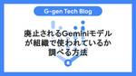
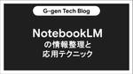
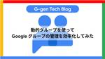
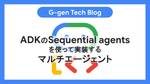
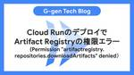
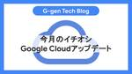

G-gen Tech Blog
https://blog.g-gen.co.jp/
Google Cloud(旧称GCP)の情報発信を行う技術ブログ
フィード

廃止されるGeminiモデルが組織で使われているか調べる方法
G-gen Tech Blog
G-genの杉村です。当記事では、Google Cloud の Gemini モデルなどの旧バージョンの廃止に関する注意点、そして組織内で該当モデルが使用されているかを確認する方法について解説します。 Gemini モデルのライフサイクルと廃止 廃止対象モデルとスケジュール 廃止予定モデルの使用状況確認方法 概要 課金レポートからの確認 データアクセス監査ログでの確認 推奨される対応 Gemini モデルのライフサイクルと廃止 Google Cloud の Vertex AI では、生成 AI モデルが継続的にアップデートされ、新しいバージョンが提供されます。モデルにはライフサイクルが設定され…
15時間前

NotebookLMの情報整理と応用テクニック
G-gen Tech Blog
G-gen の溝口です。この記事では NotebookLM を使った情報整理と「Discover（ソースの発見）」「音声概要」「マインドマップ」などの応用機能を使った活用テクニックについて解説します。 NotebookLM とは Discover によるソース検索 音声概要の生成 マインドマップ NotebookLM とは NotebookLM とは、Google が提供している、AI を活用したリサーチ・ライティングのアシスタントツールです。無償の Google アカウントで利用できる NotebookLM の他に、Google Workspace に付帯している NotebookLM Pl…
3日前

動的グループを使ってGoogleグループの管理を効率化してみた
G-gen Tech Blog
G-gen の三浦です。当記事では、Google Workspace の動的グループを使用し、Google グループのメンバー管理を自動化する方法を紹介します。 概要 動的グループとは 制約事項 検証内容 検証 動的グループの検証（ユーザーの属性ベース） 設定 動作確認 動的グループの検証（2段階認証が未登録のユーザー） 設定 動作確認 概要 動的グループとは 動的グループとは、Google Workspace のユーザー情報（役職や勤務地など）に基づいて、メンバーを自動的に管理できる Google グループです。 組織の異動や変化に対応し、管理作業の自動化と効率化を実現します。 使用例 説明…
6日前
Cloud RunでGemma 3を動かしてみた 2
2
G-gen Tech Blog
G-gen の佐々木です。当記事では、Cloud Run における GPU 利用のユースケースとして、オープン LLM である Gemma 3 を Cloud Run のサービスにデプロイしてみます。 前提知識 Cloud Run サービスの概要 Cloud Run における GPU 利用 Gemma 3 Cloud Run にオープン LLM をデプロイするメリット 利用する Gemma 3 モデルのサイズと配置場所について 事前準備 GPU の割り当て増加 シェル変数の設定 Artifact Registry リポジトリの作成 サービスのデプロイ Dockerfile の準備 コンテナイメ…
7日前

ADKのSequential agentsを使って実装するマルチエージェント
G-gen Tech Blog
G-gen の堂原です。本記事では Google Cloud の Agent Development Kit の機能である、複数の AI エージェントを連携させる Sequential agents の概念と実装方法について、天気予報エージェントの開発を通して解説します。 概要 Agent Development Kit（ADK）とは Sequential agents 処理の概要 AI エージェントの実装 ユーザの都市の現在日付を取得 現在日付から明日の日付を求める Google 検索で天気予報を取得 Sequential agents による連結 動作検証 概要 Agent Develop…
8日前

Cloud RunのデプロイでArtifact Registryの権限エラー（Permission "artifactregistry.repositories.downloadArtifacts" denied）
G-gen Tech Blog
G-gen の武井です。Cloud Run をデプロイする際、従来アクセスできていた Artifact Registry への読み込みがエラーになる事象に遭遇しましたので、当記事ではその原因と対処方法について説明します。 事象 事象の概要 環境構成 IAM ポリシー 原因 対処方法 事象 事象の概要 これまで問題なく実行できていた Cloud Run サービスへのデプロイが、何も構成変更を行っていないのにも関わらず、エラー終了しました。 Cloud Logging に記録されていたエラーログは以下の通りでした。 "message": "User must have permission to …
13日前

2025年4月のイチオシGoogle Cloudアップデート
1
G-gen Tech Blog
G-gen の杉村です。2025年4月のイチオシ Google Cloud（旧称 GCP）アップデートをまとめてご紹介します。記載は全て、記事公開当時のものですのでご留意ください。 はじめに Google Cloud Next '25 が開催 IAM の基本ロールが刷新（Preview） BigQuery のユーザー定義関数（UDF）が Python に対応（Preview） BigQuery ML で 生成 AI 関数 AI.GENERATE_* が登場（Preview） Vertex AI Agent Builder が AI Applications に改名 BigQuery マテリアラ…
14日前

Agent Development Kitでエージェントを開発してAgent Engineにデプロイしてみた
G-gen Tech Blog
G-gen の堂原です。本記事では Google Cloud の Agent Development Kit を用いて開発したエージェントを、Vertex AI Agent Engine にデプロイし、呼び出す方法について紹介します。 はじめに 本記事の趣旨 Agent Development Kit Agent Engine ADK を用いた AI エージェント開発 Agent Engine へのデプロイ デプロイした AI エージェントの呼び出し AI エージェントの削除 はじめに 本記事の趣旨 本記事では、Agent Development Kit を使用してエージェントを開発し、Ver…
15日前
BigQueryのスケジュールされたクエリでAccess Denied
G-gen Tech Blog
G-gen の杉村です。BigQuery のスケジュールされたクエリ（Scheduled queries）機能で定期的にパブリックデータセットからデータを転送しようとしたところ、Access Denied が表示されてしまいました。原因と対処法を紹介します。 事象 原因 対処 事象 BigQuery のパブリックデータセット（bigquery-public-data）のテーブルからデータを SELECT し、自分のプロジェクトのテーブルに INSERT するスケジュールされたクエリ（Scheduled queries）を定義しました。 参考 : クエリのスケジューリング クエリを実行すると、以…
17日前
Google Apps Managerを使ってGoogle Workspaceをコマンドラインで管理してみた
G-gen Tech Blog
G-gen の三浦です。当記事では Google Apps Manager（以下、GAM）を使用し、Google Workspace の設定をコマンドライン（以下、CLI）で管理する方法を紹介します。 概要 Google Apps Manager（GAM） とは 注意事項 検証内容 GAM のセットアップ [Google Cloud] GAM をインストール [Google Workspace] GAM アプリから Google Workspace へのアクセス許可 [Google Cloud] OAuth クライアントの作成 [Google Workspace] OAuth クライアントから…
20日前
VPC Service Controls境界でのサービスアカウントIP制限をLooker Studioで試してみた
G-gen Tech Blog
G-gen の min です。Looker Studio でデータソースに対する認証にサービスアカウントを使っているとき、VPC Service Controls による IP アドレス制限がどのように適用されるかを検証しました。 概要 環境構築 サービスアカウントの作成 VPC SC の設定 動作確認 注意点 概要 当記事では、Looker Studio でデータソースに対する認証にサービスアカウントを使っているとき、VPC Service Controls（以下、VPC SC）による接続元 IP アドレス制限がどのように適用されるかを検証しました。 検証の結果、VPC SC 環境下では、L…
22日前
Conversational agents: Build and deploy no-code/low-code AI Agents（Google Cloud Next '25セッションレポート）
G-gen Tech Blog
G-gen の奥田です。本記事は Google Cloud Next '25 in Las Vegas の3日目に行われたブレイクアウトセッション「Conversational agents: Build and deploy no-code/low-code AI Agents」のレポートです。 他の Google Cloud Next '25 の関連記事は Google Cloud Next '25 カテゴリの記事一覧からご覧いただけます。 セッションの概要 Customer Engagement Suite とは 機能の紹介 ハイブリッドエージェントを構築するための統合コンソール 合計1…
23日前
GitHubのreleaseイベントをトリガーにして、DockerイメージをArtifact Registryにプッシュする
G-gen Tech Blog
G-gen の武井です。当記事では GitHub の release イベントをトリガーにして、Docker イメージを Artifact Registry にプッシュする方法について解説します。 はじめに 概要 ワークフロー GitHub Actions ワークフロー 概要 release とは 構成 ソースコード 免責事項 ディレクトリ構成 ワークフロー（release.yaml） デモ リリース作成 ワークフロー実行 関連記事 はじめに 概要 当記事では、GitHub の release イベントが発生すると、それをトリガーとして Docker イメージをビルドしたのち、Artifact…
24日前
Google Meetの文字起こしとGemini 2.5 Proによる議事録作成アプリ
G-gen Tech Blog
当記事では、Google Meet の文字起こし機能と、Google の最新 AI モデル Gemini 2.5 Pro を組み合わせた、議事録作成アプリの事例を紹介します。 はじめに 議事録作成アプリ なぜ議事録作成に AI なのか？ アプリを実装しない選択肢 Google Meet の文字起こし機能 主な特徴 文字起こしの開始方法 文字起こしのデータ Gemini 2.5 Pro による要約 システムプロンプト Vertex AI Studio での試験 Web アプリケーションの開発 streamlit を使ったチャットアプリ モデル名の修正 システムプロンプトの修正 アプリケーションの…
1ヶ月前
Cross-Site Interconnectを解説。Googleのバックボーンネットワークを企業が利用可能に
G-gen Tech Blog
G-gen の杉村です。Google Cloud の Cloud WAN（Cloud Wide Area Network）の構成要素である、Cross-Site Interconnect を解説します。 概要 Cross-Site Interconnect とは 構成イメージ ユースケース 要件 構成要素 ワイヤー ワイヤーグループ クロスサイトネットワーク ワイヤーグループのトポロジ シングルワイヤー 冗長トポロジ ボックスアンドクロストポロジ ネットワークのトポロジ ハブアンドスポークトポロジ リンクトポロジ 詳細な設定 MTU 暗号化 構築 料金 概要 Cross-Site Interc…
1ヶ月前
AI-powered cancer detection in medical imaging（Google Cloud Next '25セッションレポート）
G-gen Tech Blog
G-gen の奥田です。本記事は Google Cloud Next '25 in Las Vegas の3日目に行われたソリューショントーク「AI-powered cancer detection in medical imaging」 のレポートです。 他の Google Cloud Next '25 の関連記事は Google Cloud Next '25 カテゴリの記事一覧からご覧いただけます。 セッションの概要 AI を利用するための未来 マルチモーダル AI の力 検討要素 解決策の紹介 Health AI developer Foundation （HAI-DEF） HAI-DE…
1ヶ月前
Cloud Run Threat Detectionを検証してみた
G-gen Tech Blog
G-gen の三浦です。当記事では、Cloud Run Threat Detection を検証した結果を紹介します。 概要 Cloud Run Threat Detection とは 2つの検出機能 Artifact Analysis との違い 注意事項 検証内容 検証 脅威検出機能の有効化 Cloud Run のデプロイ ディレクトリ構成 Dockerfile main.py requirements.txt 疑似攻撃の実行と検出結果の確認 概要 Cloud Run Threat Detection とは Cloud Run Threat Detection とは、Cloud Run で実…
1ヶ月前
What’s new with IAM and Org Policy : Access risk, at-scale governance and AI（Google Cloud Next '25セッションレポート）
G-gen Tech Blog
G-gen の山崎です。本記事は Google Cloud Next '25 in Las Vegas の1日目に行われたブレイクアウトセッション「What’s new with IAM and Org Policy : Access risk, at-scale governance and AI」のレポートです。 他の Google Cloud Next '25 の関連記事は Google Cloud Next '25 カテゴリの記事一覧からご覧いただけます。 セッションの概要 Google Cloud のセキュリティプラットフォーム Google Cloud のセキュリティプラットフォー…
1ヶ月前
What’s next for security professionals（Google Cloud Next '25セッションレポート）
G-gen Tech Blog
G-gen の道下です。本記事は Google Cloud Next '25 in Las Vegas の 2日目に行われたスポットライトセッション「What’s next for security professionals」のレポートです。 他の Google Cloud Next '25 の関連記事は Google Cloud Next '25 カテゴリの記事一覧からご覧いただけます。 セッションの概要 Google Unified Security（GUS）とは Google Security Operations（Google SecOps） Data pipeline Mana…
1ヶ月前
Transform team collaboration with Gemini in Google Chat and Meet（Google Cloud Next '25セッションレポート）
G-gen Tech Blog
G-gen の横澤です。本記事は Google Cloud Next '25 in Las Vegas の2日目に行われたブレイクアウトセッション「Transform team collaboration with Gemini in Google Chat and Meet」のレポートです。 他の Google Cloud Next '25 の関連記事は Google Cloud Next '25 カテゴリの記事一覧からご覧いただけます。 セッションの概要 Google Meet Take Notes for Me Studio Effect Capture next steps and a…
1ヶ月前
What’s new with Cloud Storage（Google Cloud Next '25セッションレポート）
G-gen Tech Blog
G-gen の道下です。本記事は Google Cloud Next '25 in Las Vegas の 1日目に行われたブレイクアウトセッション「What’s new with Cloud Storage」のレポートです。 他の Google Cloud Next '25 の関連記事は Google Cloud Next '25 カテゴリの記事一覧からご覧いただけます。 セッションの概要 導入 6つの主要なトピック AIとデータレイク Rapid Storage Managed Lustre ストレージインテリジェンス データレイク向け機能 Anywhere Cache ファイルデータ移行…
1ヶ月前
Humans and AI agents together—driving success with Salesforce and Google Cloud（Google Cloud Next '25セッションレポート）
G-gen Tech Blog
G-gen の奥田です。本記事は Google Cloud Next '25 in Las Vegas の2日目に行われたブレイクアウトセッション「Humans and AI agents together—driving success with Salesforce and Google Cloud」のレポートです。 他の Google Cloud Next '25 の関連記事は Google Cloud Next '25 カテゴリの記事一覧からご覧いただけます。 セッションの概要 サービス紹介 Agent2Agent Protocol（A2A） Salesforce Agentforce…
1ヶ月前
What’s new in Cloud Run（Google Cloud Next '25セッションレポート）
G-gen Tech Blog
G-gen の山崎です。本記事は Google Cloud Next '25 in Las Vegas の1日目に行われたブレイクアウトセッション「What’s new in Cloud Run」のレポートです。 他の Google Cloud Next '25 の関連記事は Google Cloud Next '25 カテゴリの記事一覧からご覧いただけます。 セッションの概要 Cloud Run の新機能 Cloud Functions の統合 Gemini Code Assist in Cloud Run functions Cloud Storage volume mounts Fire…
1ヶ月前
Google Workspace: How businesses are using AI to drive results（Google Cloud Next '25セッションレポート）
G-gen Tech Blog
G-gen の道下です。本記事は Google Cloud Next '25 in Las Vegas の 1日目に行われたスポットライトセッション「Google Workspace: How businesses are using AI to drive results」のレポートです。 他の Google Cloud Next '25 の関連記事は Google Cloud Next '25 カテゴリの記事一覧からご覧いただけます。 セッションの概要 新機能の発表 Audio in Docs Gemini in meetings Help me Refine in Docs Genera…
1ヶ月前
BigQueryの新発表を解説（Google Cloud Next '25速報）
G-gen Tech Blog
G-gen の杉村です。当記事では、Google Cloud Next '25 で発表された BigQuery の新機能について紹介します。 概要 BigQuery と AI の統合 全体像 BigQuery data preparation データセットレベルのインサイト（BigQuery データキャンバス） BigQuery pipelines にデータエンジニアリングエージェントが組み込み Colab Notebook にデータサイエンスエージェントが組み込み BigQuery AI query engine BigQuery DataFrames におけるコード支援 Looker の会…
1ヶ月前
GKEの生成AIワークロードを支援する新機能を紹介（Google Cloud Next '25速報）
G-gen Tech Blog
G-gen の佐々木です。当記事では Google Cloud Next '25 で発表された Google Kubernetes Engine（GKE）における最新の生成 AI 関連機能を紹介します。 概要 GKE における AI 推論 ワークロード GKE Inference Quickstart GKE Inference Gateway GKE TPU serving stack 概要 Google Cloud の旗艦イベントである Google Cloud Next '25 にて、GKE で生成 AI による推論ワークロードを展開するための新たな機能が発表されました。 当記事では、以…
1ヶ月前
Gemini 2.5、Vertex AI Model Optimizer、Vertex AI Global Endpoint（Google Cloud Next '25速報）
G-gen Tech Blog
G-gen の杉村です。当記事では、Google Cloud Next '25 で発表された Google の最新の生成 AI モデル Gemini 2.5 や、Vertex AI Model Optimizer、Vertex AI Global Endpoint などの新機能について紹介します。 概要 Gemini 2.5 Pro Gemini 2.5 Flash Vertex AI Model Optimizer Vertex AI Model Optimizer とは 使用方法 Vertex AI Global Endpoint 関連記事 概要 Google Cloud の旗艦イベントで…
1ヶ月前
Google Cloud Next '25 速報レポート - キーノート（2日目）
G-gen Tech Blog
G-gen の杉村です。当記事では、Google Cloud Next '25 in Las Vegas の、2日目のキーノートに関する速報レポートをお届けします。 Google Cloud Next '25 in Las Vegas 概要 Google AI Studio の新しい UI Agent Development Kit（ADK） ADK の使い方 マルチエージェントとデバッグ Agent2Agent Protocol（A2A） 開発環境 IDE との統合 サードパーティモデルの利用 Android Studio Firebase Studio スポーツと Gemini Data …
1ヶ月前
Gemini's in-context learning for Data Analytics in 15 minutes（Google Cloud Next '25セッションレポート）
G-gen Tech Blog
G-gen の山崎です。本記事は Google Cloud Next '25 in Las Vegas の2日目に行われた ライトニングトークセッション「Gemini's in-context learning for Data Analytics in 15 minutes」のレポートです。 他の Google Cloud Next '25 の関連記事は Google Cloud Next '25 カテゴリの記事一覧からご覧いただけます。 セッションの概要 ビジネスインテリジェンスの主要な問題点 3つのカテゴリごとの課題 別の視点での課題の提示 課題の解決に向けたアプローチ 「自然言語から …
1ヶ月前
Accelerate your software development lifecycle with agents （Google Cloud Next '25セッションレポート）
G-gen Tech Blog
G-gen の奥田です。本記事は Google Cloud Next '25 in Las Vegas の1日目に行われたブレイクアウトセッション「Accelerate your software development lifecycle with agents」のレポートです。 他の Google Cloud Next '25 の関連記事は Google Cloud Next '25 カテゴリの記事一覧からご覧いただけます。 セッションの概要 ミッションと課題 ミッション アプローチ 仕様書を元に、完全ゼロから新しいアプリケーションを作成するデモ 概要 関連記事 セッションの概要 本セッシ…
1ヶ月前